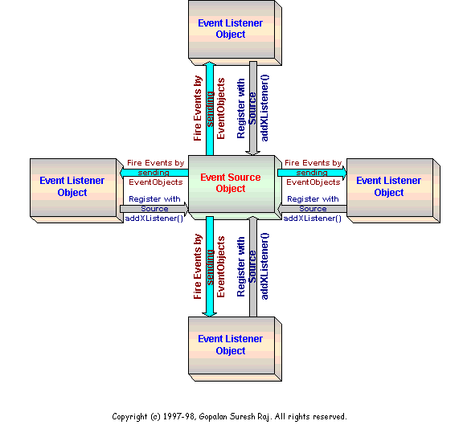
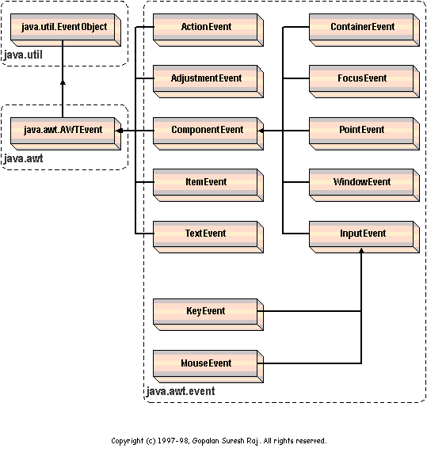

| Back to the Tutorial Page |
|
The Java 1.1 Event Model
| To run any of the sample applets in this tutorial, you need a Java 1.1 enabled browser. If you don't already have one, I would highly recommend that you download Internet Explorer 4.0x or Netscape Navigator 4.06. |
| Did you know? |
| There are 6 different ways in which you can write your Event Handling code using the Java 1.1 Event Model. Shown here is one such way. In this section about The Java 1.1 Event Model, I am going to discuss at length about all the different ways in which you can write your event handling code. |
Event-handling code is the heart of every useful application. All event-driven programs are structured around their event-processing model. Java events are part of the Java Abstract Windowing Toolkit package (AWT for short).
Design Goals for the 1.1 Event Model
People who are familiar with the MS-Windows or X-Windows SDK programming, remember that the Windows Procedure was braced against a flood of events and then a giant ‘switch’ statement was used to sort through these events.
Similarly, in The Microsoft Foundation Classes programming model or The Motif programming model, each component has to be over-ridden to make it do what you want it to do - something similar to the older Java 1.0 Inheritance Event Model.
Neither of the approaches discussed above are really elegant. The first approach is the easiest to implement, but any time you use a switch statement, you somehow have this nagging feeling that perhaps there is something un-object-oriented in the design or that a different class heirarchy and design would have made this go away.
The second approach is more object-oriented, but involves a great deal of work.
There were a few flaws with the Java 1.0 Inheritance Event Model. One major problem was that an event could only be handled by the component which generated it or by one of the containers that contained the original component.
Another drawback with the Java 1.0 Inheritance Event Model was that a large number of CPU cycles were wasted on uninteresting events. Any event in which a program had no interest would just flow through the containment heirarchy before it was eventually discarded. The original model provided no way to disable irrelevant events.
With the new 1.1 Delegation Event Model, a component can be told which object or objects should be notified when the component generates a particular type of event. If a component is not interested in an event type, then events of that type will not be propagated.
According to Sun, the reasons for coming out with the Java 1.1 Delegation Event Model are:
Simple and easy to learn Support a clean separation between application and GUI code Flexible enough to enable varied application models for event flow and propagation For visual tool builders, enable run-time discovery of both events that a component generates
as well as the events it may observeSupport backward binary compatibility with the old model Facilitate the creation of robust event handling code which is less error-prone
(strong compile-time checking)The 1.1 Delegation Event Model
The 1.1 Event model is based on the concept of an ‘Event Source’ and ‘Event Listeners’. Any object that is interested in receiving messages (or events ) is called an Event Listener. Any object that generates these messages ( or events ) is called an Event Source.
 Figure: Java 1.1 Event Handling mechanism
The Event Source Object maintains a list of listeners who are interested in receiving events that it produces. The Event Source Object provides methods that allow the listeners to add themselves ( ‘Register’ ) or remove themselves from this list of ‘interested’ objects. When the Event Source Object generates an event, or when a user input event occurs on the Event Source Object, the Event Source Object notifies all the listeners that the event has occurred.
//This is one typical Event Source Object implementation
public class EventSource extends Applet
{
public Label m_Label;
public Button m_Button;
public int m_nCounter;
public void init()
{
m_Label = new Label( "Go ahead and click away." );
m_Button = new Button( "Click Here" );
EventListener listenerObject = new EventListener( this );
//Register with event source using addXListener
m_Button.addActionListener( listenerObject );
add( m_Label );
add( m_Button );
}
}
//This is one typical Event Listener Object implementation
class EventListener implements ActionListener
{
private EventSource m_sourceObject;
public EventListener( EventSource sourceObject )
{
m_sourceObject = sourceObject;
}
//This method handles the EventObjects fired by the EventSource Object
//Note: An ActionEvent is an EventObject
public void actionPerformed( ActionEvent e )
{
m_sourceObject.m_Label.setText( "That was click " +
( ++m_sourceObject.m_nCounter ) +
" buddy." );
}
}
An Event Source Object notifies an Event Listener Object by invoking a method on it and passing it an EventObject ( an instance of a subclass of java.util.EventObject ). In order for the source to invoke a method on a listener, all listeners must implement the required method. This is ensured by requiring that all event listeners for a particular type of event implement a corresponding interface.
The Java 1.1 Event Delegation Model is based on four concepts:
The Event Classes The Event Listeners Explicit Event Enabling Adapters The Event Classes
The Java 1.1 event model defines a large number of event classes. The figure below shows the heirarchy of these event classes.
 Figure: The Event Class Heirarchy
If you will notice carefully, different classes of events are represented by different Java classes.
java.util.EventObject - Every event is a subclass of java.util.EventObject. It is a very general class with only one method of interest:
Object getSource()
This method returns the object that originated the event. Every event has a source object, from which the event originated. This method returns a reference to that source.
java.awt.AWTEvent - AWT Events, which is what we are concerned here, are subclasses of java.awt.AWTEvent. This is the superclass of all the delegation model event classes. The most interesting method in this class is
This method returns the ID of the event. An event’s ID is an int that specifies the exact nature of the event. This value is used to distinguish the various types of events that are represented by any event class.
java.awt.event - The subclasses of java.awt.AWTEvent represent the various event types that can be generated by the various AWT components. All the various types of AWT events, are placed in a separate package called java.awt.event for the sake of convenience.
ActionEvent generated by component activation AdjustmentEvent generated by adjustment of adjustable components such as scroll bars ContainerEvent generated when components are added to or removed from a container FocusEvent generated when a component receives input focus ItemEvent generated when an item is selected from a list, choice or check box KeyEvent generated by keyboard activity MouseEvent generated by mouse activity PaintEvent generated when a component is painted TextEvent generated when a text component is modified WindowEvent generated by window activity like minimising or maximising There are a number of ways to handle the events listed above. One way is to delegate event handling to a listener object. Another way is to explicitly enable the originating component to handle its own events.
The Event Listeners
Event Listeners are objects that are responsible for handling a particular task of a component. The Listener typically implements the interface that contains event-handling code for a particular component. For instance, when the component experiences input, an EventObject of the appropriate type is constructed and is passed as a parameter to a method call on the listener:
//This is one typical Event Listener Object implementation
class EventListener implements ActionListener
{
private EventSource m_sourceObject;
public EventListener( EventSource sourceObject )
{
m_sourceObject = sourceObject;
}
//This method handles the EventObjects fired by the EventSource Object
//Note: An ActionEvent is an EventObject
public void actionPerformed( ActionEvent e )
{
m_sourceObject.m_Label.setText( "That was click " +
( ++m_sourceObject.m_nCounter ) +
" buddy." );
}
}
In the above code fragment, the class implements the ActionListener interface, thus guaranteeing the presence of an actionPerformed() method. The applet code that forms the Event Source looks like this:
//This is one typical Event Source Object implementation
public class EventSource extends Applet
{
public Label m_Label;
public Button m_Button;
public int m_nCounter;
public void init()
{
m_Label = new Label( "Go ahead and click away." );
m_Button = new Button( "Click Here" );
EventListener listenerObject = new EventListener( this );
//Register with event source using addXListener
m_Button.addActionListener( listenerObject );
add( m_Label );
add( m_Button );
}
}
If you notice the code fragment above, an instance of the EventListener class is created. This instance listenerObject, is set as one of the Button's action listeners using the addActionListener() method call. All in all, you will find a standard pattern followed for giving a listener to a component. It can be summarized as follows
Create a listener class that implements the ...Listener interface Construct the component Construct an instance of the listener interface Call add...Listener() on the component, passing in the listener An event listener may be removed from an Event Source's list of interested Listeners by calling a remove...Listener() method, passing in the listener object to be removed. For example, in the above code fragment, the code below removes the action listener object listenerObject from the button m_Button.
Explicit Event Enabling
Adapters
A simple Java Applet that Illustrates the Java 1.1 Event Handling model
- It displays a circle at the center of its display.
- If user clicks and drags the mouse over the circle, the circle moves to follow the mouse
- When the user presses any of the keyboard arrow keys, the circle moves a few pixels in the appropriate direction.
- When the user types a function key, F1 thro' F10, the circle color changes
| Your Experimental Applet: This Applet is for you to experiment with | This Applet displays the source code that was executed in your experimental applet as a result of the action you performed on that object. |
Having fun with inter-applet communication - are'nt we? |
|
|
This site was developed and is maintained by Gopalan Suresh Raj This page has been visited |
|
Last Updated :May2,'98 |
||
Copyright (c) 1997-98, Gopalan Suresh Raj - All rights reserved. Terms of use. |
All products and companies mentioned at this site,are trademarks of their respective owners. |